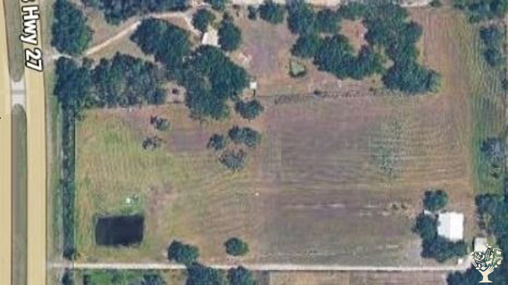
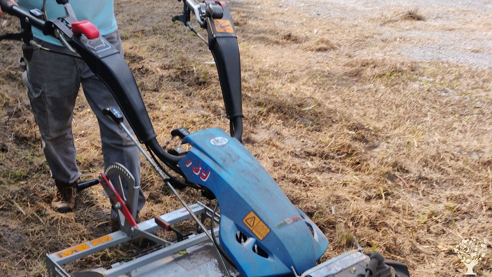
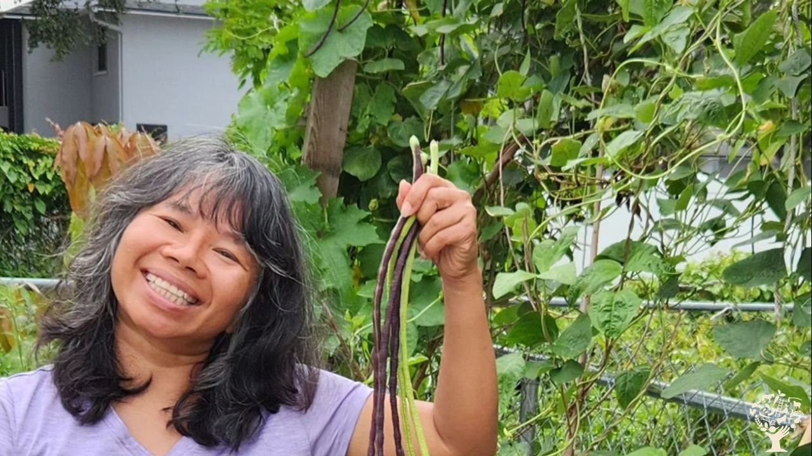
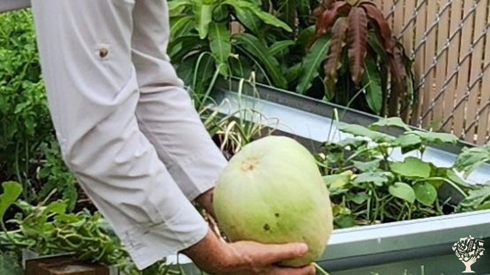
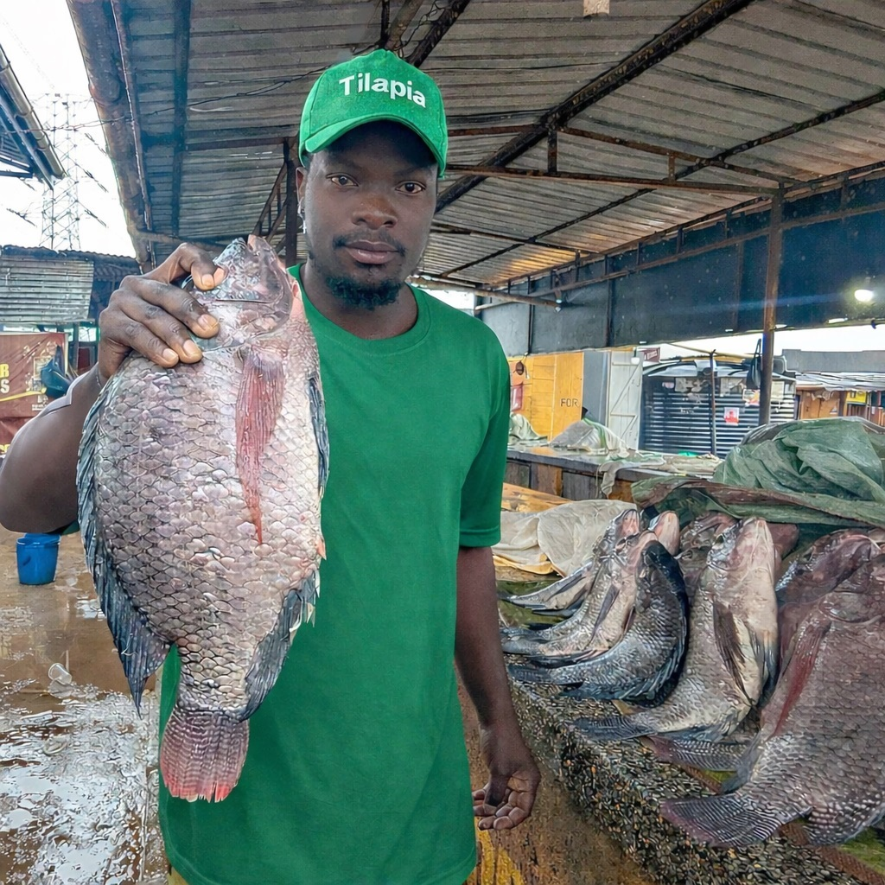

Scenes from Family Orchards
A visual look at the property, farm planning, field work, and produce that support the Family Orchards story.
Photo gallery






A visual look at the property, farm planning, field work, and produce that support the Family Orchards story.




